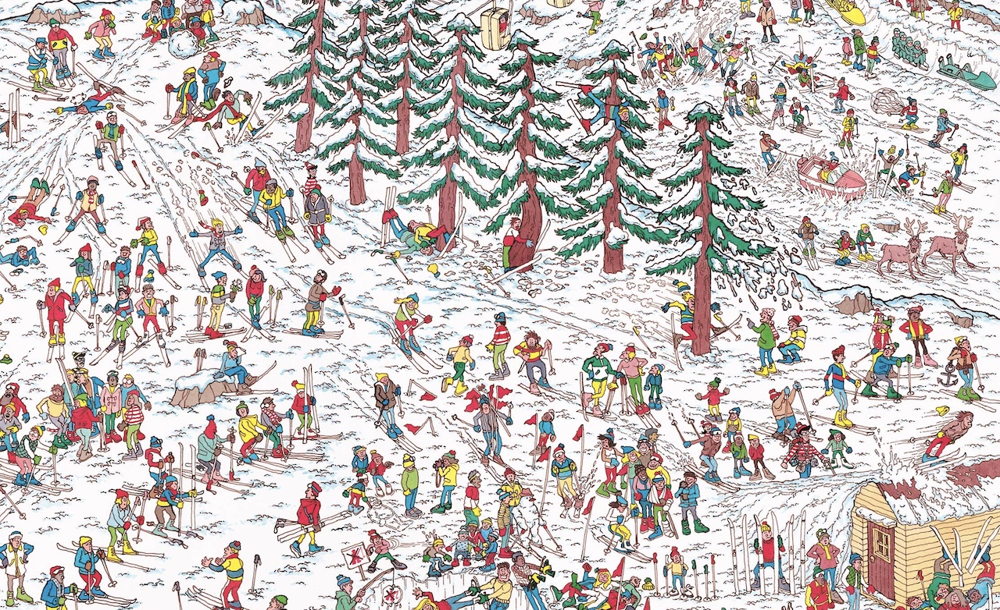
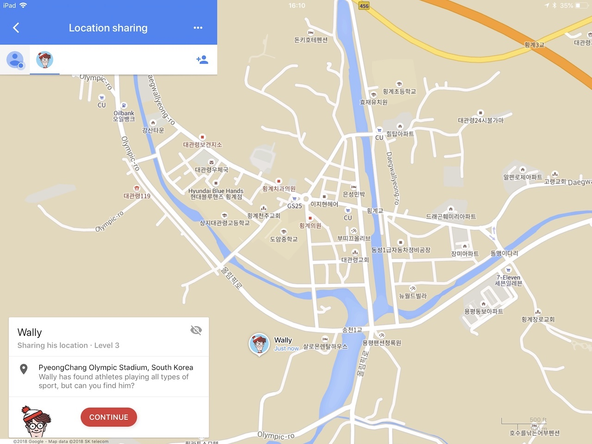

1 kwietnia 2018
Google lubuje się w przemycaniu różnorakich easter eggów w swoich produktach. Ostatnio, z okazji światowego dnia Super Mario, w nawigacji Google Maps byliśmy prowadzeni przez Mariana zasiadającego za kierownicą gokartu.

Dziś, w ramach wielkanocno-primaaprilisowego kalendarzowego combo gigant z Mountain View zaszył w swoich mapach Wally'ego znanego z publikowanych od 30 lat łamigłówek "Gdzie jest Wally?"
Po uruchomieniu aplikacji Mapy na urządzeniu mobilnym, bądź też na komputerze w przeglądarce (i potwierdzeniu chęci udziału w zabawie), Wally pojawi się w wybranym miejscu na świecie. Po kliknięciu na jego portrecie, naszym oczom ukaże się obrazek, jaki niejeden z nas rozwiązywał w dzieciństwie.

Po odnalezieniu Wally'ego odblokujemy kolejny poziom, czyli następne miejsce na mapie, gdzie ukrył się główny bohater. Możemy jednak kontynuować zabawę na starym rysunku, aby wskazać inne postacie z serii: Wendę, Białobrodego Czarodzieja, Lewusa oraz psa Szczeka.
Wydarzenie dostępne będzie przez cały tydzień, a Wally'ego wraz z przyjaciółmi będziemy mogli poszukać: